How does a point traversing a circle naturally generate a function?
What are some important properties that characterize a function generated by a point traversing a circle?
How does a circular function change in ways that are different from linear and quadratic functions?
Certain naturally occurring phenomena eventually repeat themselves, especially when the phenomenon is somehow connected to a circle. For example, suppose that you are taking a ride on a ferris wheel and we consider your height, \(h\text{,}\) above the ground and how your height changes in tandem with the distance, \(d\text{,}\) that you have traveled around the wheel. In Figure 2.1.1 we see a snapshot of this situation, which is available as a full animation 1
Used with permission from Illuminations by the National Council of Teachers of Mathematics. All rights reserved.
Figure2.1.1.A snapshot of the motion of a cab moving around a ferris wheel. Reprinted with permission from Illuminations by the National Council of Teachers of Mathematics. All rights reserved.
Because we have two quantities changing in tandem, it is natural to wonder if it is possible to represent one as a function of the other.
Preview Activity2.1.1.
In the context of the ferris wheel pictured in Figure 2.1.1, assume that the height, \(h\text{,}\) of the moving point (the cab in which you are riding), and the distance, \(d\text{,}\) that the point has traveled around the circumference of the ferris wheel are both measured in meters.
Further, assume that the circumference of the ferris wheel is \(150\) meters. In addition, suppose that after getting in your cab at the lowest point on the wheel, you traverse the full circle several times.
Recall that the circumference, \(C\text{,}\) of a circle is connected to the circle’s radius, \(r\text{,}\) by the formula \(C = 2\pi r\text{.}\) What is the radius of the ferris wheel? How high is the highest point on the ferris wheel?
How high is the cab after it has traveled \(1/4\) of the circumference of the circle?
How much distance along the circle has the cab traversed at the moment it first reaches a height of \(\frac{150}{\pi} \approx 47.75\) meters?
Can \(h\) be thought of as a function of \(d\text{?}\) Why or why not?
Can \(d\) be thought of as a function of \(h\text{?}\) Why or why not?
Why do you think the curve shown at right in Figure 2.1.1 has the shape that it does? Write several sentences to explain.
Subsection2.1.1Circular Functions
The natural phenomenon of a point moving around a circle leads to interesting relationships. For easier arithmetic, let’s consider a point traversing a circle of circumference \(24\) and examine how the point’s height, \(h\text{,}\) changes as the distance traversed, \(d\text{,}\) changes. Note particularly that each time the point traverses \(\frac{1}{8}\) of the circumference of the circle, it travels a distance of \(24 \cdot \frac{1}{8} = 3\) units, as seen in Figure 2.1.2 where each noted point lies \(3\) additional units along the circle beyond the preceding one.
Figure2.1.2.A point traversing a circle with circumference \(C = 24\text{.}\)
Note that we know the exact heights of certain points. Since the circle has circumference \(C = 24\text{,}\) we know that \(24 = 2\pi r\) and therefore \(r = \frac{12}{\pi} \approx 3.82\text{.}\) Hence, the point where \(d = 6\) (located \(1/4\) of the way along the circle) is at a height of \(h = \frac{12}{\pi} \approx 3.82\text{.}\) Doubling this value, the point where \(d = 12\) has height \(h = \frac{24}{\pi} \approx 7.64\text{.}\) Other heights, such as those that correspond to \(d = 3\) and \(d = 15\) (identified on the figure by the green line segments) are not obvious from the circle’s radius, but can be estimated from the grid in Figure 2.1.2 as \(h \approx 1.1\) (for \(d = 3\)) and \(h \approx 6.5\) (for \(d = 15\)). Using all of these observations along with the symmetry of the circle, we can determine the other entries in Table 2.1.3.
Table2.1.3.Data for height, \(h\text{,}\) as a function of distance traversed, \(d\text{.}\)
\(d\)
\(0\)
\(3\)
\(6\)
\(9\)
\(12\)
\(15\)
\(18\)
\(21\)
\(24\)
\(h\)
\(0\)
\(1.1\)
\(3.82\)
\(6.5\)
\(7.64\)
\(6.5\)
\(3.82\)
\(1.1\)
\(0\)
Moreover, if we now let the point continue traversing the circle, we observe that the \(d\)-values will increase accordingly, but the \(h\)-values will repeat according to the already-established pattern, resulting in the data in Table 2.1.4.
Table2.1.4.Additional data for height, \(h\text{,}\) as a function of distance traversed, \(d\text{.}\)
\(d\)
\(24\)
\(27\)
\(30\)
\(33\)
\(36\)
\(39\)
\(42\)
\(45\)
\(48\)
\(h\)
\(0\)
\(1.1\)
\(3.82\)
\(6.5\)
\(7.64\)
\(6.5\)
\(3.82\)
\(1.1\)
\(0\)
It is apparent that each point on the circle corresponds to one and only one height, and thus we can view the height of a point as a function of the distance the point has traversed around the circle, say \(h = f(d)\text{.}\) Using the data from the two tables and connecting the points in an intuitive way, we get the graph shown in Figure 2.1.5.
Figure2.1.5.The height, \(h\text{,}\) of a point traversing a circle of circumference \(24\) as a function of distance, \(d\text{,}\) traversed around the circle.
The function \(h = f(d)\) we have been discussing is an example of what we will call a circular function. Indeed, it is apparent that if we
take any circle in the plane,
choose a starting location for a point on the circle,
let the point traverse the circle continuously,
and track the height of the point as it traverses the circle,
the height of the point is a function of distance traversed and the resulting graph will have the same basic shape as the curve shown in Figure 2.1.5. It also turns out that if we track the location of the \(x\)-coordinate of the point on the circle, the \(x\)-coordinate is also a function of distance traversed and its curve has a similar shape to the graph of the height of the point (the \(y\)-coordinate). Both of these functions are circular functions because they are generated by motion around a circle.
Activity2.1.2.
Consider the circle pictured in Figure 2.1.6 that is centered at the point \((2,2)\) and that has circumference \(8\text{.}\) Assume that we track the \(y\)-coordinate (that is, the height, \(h\)) of a point that is traversing the circle counterclockwise and that it starts at \(P_0\) as pictured.
Figure2.1.6.A point traversing the circle.
Figure2.1.7.Axes for plotting \(h\) as a function of \(d\text{.}\)
How far along the circle is the point \(P_1\) from \(P_0\text{?}\) Why?
Label the subsequent points in the figure \(P_2\text{,}\)\(P_3\text{,}\)\(\ldots\) as we move counterclockwise around the circle. What is the exact \(y\)-coordinate of the point \(P_2\text{?}\) of \(P_4\text{?}\) Why?
Determine the \(y\)-coordinates of the remaining points on the circle (exactly where possible, otherwise approximately) and hence complete the entries in Table 2.1.8 that track the height, \(h\text{,}\) of the point traversing the circle as a function of distance traveled, \(d\text{.}\) Note that the \(d\)-values in the table correspond to the point traversing the circle more than once.
Table2.1.8.Data for \(h\) as a function of \(d\text{.}\)
\(d\)
\(0\)
\(1\)
\(2\)
\(3\)
\(4\)
\(5\)
\(6\)
\(7\)
\(8\)
\(9\)
\(10\)
\(11\)
\(12\)
\(13\)
\(14\)
\(15\)
\(16\)
\(h\)
\(2\)
\(\)
\(\)
\(\)
\(\)
\(\)
\(\)
\(\)
\(\)
\(\)
\(\)
\(\)
\(\)
\(\)
\(\)
\(\)
\(\)
By plotting the points in Table 2.1.8 and connecting them in an intuitive way, sketch a graph of \(h\) as a function of \(d\) on the axes provided in Figure 2.1.7 over the interval \(0 \le d \le 16\text{.}\) Clearly label the scale of your axes and the coordinates of several important points on the curve.
What is similar about your graph in comparison to the one in Figure 2.1.5? What is different?
What will be the value of \(h\) when \(d = 51\text{?}\) How about when \(d = 102\text{?}\)
Subsection2.1.2Properties of Circular Functions
Every circular function has several important features that are connected to the circle that defines the function. For the discussion that follows, we focus on circular functions that result from tracking the \(y\)-coordinate of a point traversing counterclockwise a circle of radius \(a\) centered at the point \((k,m)\text{.}\) Further, we will denote the circumference of the circle by the letter \(p\text{.}\)
Figure2.1.9.A point traversing the circle.
Figure2.1.10.Plotting \(h\) as a function of \(d\text{.}\)
We assume that the point traversing the circle starts at \(P\) in Figure 2.1.9. Its height is initially \(y = m + a\text{,}\) and then its height decreases to \(y = m\) as we traverse to \(Q\text{.}\) Continuing, the point’s height falls to \(y = m - a\) at \(R\text{,}\) and then rises back to \(y = m\) at \(S\text{,}\) and eventually back up to \(y = m+a\) at the top of the circle. If we plot these heights continuously as a function of distance, \(d\text{,}\) traversed around the circle, we get the curve shown at right in Figure 2.1.10. This curve has several important features for which we introduce important terminology.
The midline of a circular function is the horizontal line \(y = m\) for which half the curve lies above the line and half the curve lies below. If the circular function results from tracking the \(y\)-coordinate of a point traversing a circle, \(y = m\) corresponds to the \(y\)-coordinate of the center of the circle. In addition, the amplitude of a circular function is the maximum deviation of the curve from the midline. Note particularly that the value of the amplitude, \(a\text{,}\) corresponds to the radius of the circle that generates the curve.
Because we can traverse the circle in either direction and for as far as we wish, the domain of any circular function is the set of all real numbers. From our observations about the midline and amplitude, it follows that the range of a circular function with midline \(y = m\) and amplitude \(a\) is the interval \([m-a,m+a]\text{.}\)
Finally, we introduce the formal definition of a periodic function.
Definition2.1.11.
Let \(f\) be a function whose domain and codomain are each the set of all real numbers. We say that \(f\) is periodic provided that there exists a real number \(k\) such that \(f(x+k) = f(x)\) for every possible choice of \(x\text{.}\) The smallest positive value \(p\) for which \(f(x+p) = f(x)\) for every choice of \(x\) is called the period of \(f\text{.}\)
For a circular function, the period is always the circumference of the circle that generates the curve. In Figure 2.1.10, we see how the curve has completed one full cycle of behavior every \(p\) units, regardless of where we start on the curve.
Circular functions arise as models for important phenomena in the world around us, such as in a harmonic oscillator. Consider a mass attached to a spring where the mass sits on a frictionless surface. After setting the mass in motion by stretching or compressing the spring, the mass will oscillate indefinitely back and forth, and its distance from a fixed point on the surface turns out to be given by a circular function.
Activity2.1.3.
A weight is placed on a frictionless table next to a wall and attached to a spring that is fixed to the wall. From its natural position of rest, the weight is imparted an initial velocity that sets it in motion. The weight then oscillates back and forth, and we can measure its distance, \(h = f(t)\) (in inches) from the wall at any given time, \(t\) (in seconds). A graph of \(f\) and a table of select values are given below.
\(t\)
\(f(t)\)
\(0.25\)
\(6.087\)
\(0.5\)
\(4.464\)
\(0.75\)
\(3.381\)
\(1\)
\(3.000\)
\(1.25\)
\(3.381\)
\(1.5\)
\(4.464\)
\(1.75\)
\(6.087\)
\(2\)
\(8.000\)
\(t\)
\(f(t)\)
\(2.25\)
\(9.913\)
\(2.5\)
\(11.536\)
\(2.75\)
\(12.619\)
\(3\)
\(13.000\)
\(3.25\)
\(12.619\)
\(3.5\)
\(11.536\)
\(3.75\)
\(9.913\)
\(4\)
\(8.000\)
Determine the period \(p\text{,}\) midline \(y = m\text{,}\) and amplitude \(a\) of the function \(f\text{.}\)
What is the greatest distance the weight is displaced from the wall? What is the least distance the weight is displaced from the wall? What is the range of \(f\text{?}\)
Determine the average rate of change of \(f\) on the intervals \([4,4.25]\) and \([4.75,5]\text{.}\) Write one careful sentence to explain the meaning of each (including units). In addition, write a sentence to compare the two different values you find and what they together say about the motion of the weight.
Based on the periodicity of the function, what is the value of \(f(6.75)\text{?}\) of \(f(11.25)\text{?}\)
Subsection2.1.3The average rate of change of a circular function
Just as there are important trends in the values of a circular function, there are also interesting patterns in the average rate of change of the function. These patterns are closely tied to the geometry of the circle.
For the next part of our discussion, we consider a circle of radius \(1\) centered at \((0,0)\text{,}\) and consider a point that travels a distance \(d\) counterclockwise around the circle with its starting point viewed as \((1,0)\text{.}\) We use this circle to generate the circular function \(h = f(d)\) that tracks the height of the point at the moment the point has traversed \(d\) units around the circle from \((1,0)\text{.}\) Let’s consider the average rate of change of \(f\) on several intervals that are connected to certain fractions of the circumference.
Remembering that \(h\) is a function of distance traversed along the circle, it follows that the average rate of change of \(h\) on any interval of distance between two points \(P\) and \(Q\) on the circle is given by
\begin{equation*}
AV_{[P,Q]} = \frac{\text{change in height}}{\text{distance along the circle}}\text{,}
\end{equation*}
where both quantities are measured from point \(P\) to point \(Q\text{.}\)
First, in Figure 2.1.12, we consider points \(P\text{,}\)\(Q\text{,}\) and \(R\) where \(Q\) results from traversing \(1/8\) of the circumference from \(P\text{,}\) and \(R\)\(1/8\) of the circumference from \(Q\text{.}\) In particular, we note that the distance \(d_1\) along the circle from \(P\) to \(Q\) is the same as the distance \(d_2\) along the circle from \(Q\) to \(R\text{,}\) and thus \(d_1 = d_2\text{.}\) At the same time, it is apparent from the geometry of the circle that the change in height \(h_1\) from \(P\) to \(Q\) is greater than the change in height \(h_2\) from \(Q\) to \(R\text{,}\) so \(h_1 \gt h_2\text{.}\) Thus, we can say that
Figure2.1.12.Comparing the average rate of change over \(1/8\) the circumference.
Figure2.1.13.Comparing the average rate of change over \(1/20\) the circumference.
The differences in certain average rates of change appear to become more extreme if we consider shorter arcs along the circle. Next we consider traveling \(1/20\) of the circumference along the circle. In Figure 2.1.13, points \(P\) and \(Q\) lie \(1/20\) of the circumference apart, as do \(R\) and \(S\text{,}\) so here \(d_1 = d_5\text{.}\) In this situation, it is the case that \(h_1 \gt h_5\) for the same reasons as above, but we can say even more. From the green triangle in Figure 2.1.13, we see that \(h_1 \approx d_1\) (while \(h_1 \lt d_1\)), so that \(AV_{[P,Q]} = \frac{h_1}{d_1} \approx 1\text{.}\) At the same time, in the magenta triangle in the figure we see that \(h_5\) is very small, especially in comparison to \(d_5\text{,}\) and thus \(AV_{[R,S]} = \frac{h_5}{d_5} \approx 0\text{.}\) Hence, in Figure 2.1.13,
This information tells us that a circular function appears to change most rapidly for points near its midline and to change least rapidly for points near its highest and lowest values.
We can study the average rate of change not only on the circle itself, but also on a graph such as Figure 2.1.10, and thus make conclusions about where the function is increasing, decreasing, concave up, and concave down.
Activity2.1.4.
Consider the same setting as Activity 2.1.3: a weight oscillates back and forth on a frictionless table with distance from the wall given by, \(h = f(t)\) (in inches) at any given time, \(t\) (in seconds). A graph of \(f\) and a table of select values are given below.
\(t\)
\(f(t)\)
\(0.25\)
\(6.087\)
\(0.5\)
\(4.464\)
\(0.75\)
\(3.381\)
\(1\)
\(3.000\)
\(1.25\)
\(3.381\)
\(1.5\)
\(4.464\)
\(1.75\)
\(6.087\)
\(2\)
\(8.000\)
\(t\)
\(f(t)\)
\(2.25\)
\(9.913\)
\(2.5\)
\(11.536\)
\(2.75\)
\(12.619\)
\(3\)
\(13.000\)
\(3.25\)
\(12.619\)
\(3.5\)
\(11.536\)
\(3.75\)
\(9.913\)
\(4\)
\(8.000\)
Determine \(AV_{[2,2.25]}\text{,}\)\(AV_{[2.25,2.5]}\text{,}\)\(AV_{[2.5,2.75]}\text{,}\) and \(AV_{[2.75,3]}\text{.}\) What do these four values tell us about how the weight is moving on the interval \([2,3]\text{?}\)
Give an example of an interval of length \(0.25\) units on which \(f\) has its most negative average rate of change. Justify your choice.
Give an example of the longest interval you can find on which \(f\) is decreasing.
Give an example of an interval on which \(f\) is concave up. 3
Recall that a function is concave up on an interval provided that throughout the interval, the curve bends upward, similar to a parabola that opens up.
On an interval where \(f\) is both decreasing and concave down, what does this tell us about how the weight is moving on that interval? For instance, is the weight moving toward or away from the wall? is it speeding up or slowing down?
What general conclusions can you make about the average rate of change of a circular function on intervals near its highest or lowest points? about its average rate of change on intervals near the function’s midline?
Subsection2.1.4Summary
When a point traverses a circle, a corresponding function can be generated by tracking the height of the point as it moves around the circle, where height is viewed as a function of distance traveled around the circle. We call such a function a circular function. An image that shows how a circular function’s graph is generated from the circle can be seen in Figure 2.1.10.
Circular functions have several standard features. The function has a midline that is the line for which half the points on the curve lie above the line and half the points on the curve lie below. A circular function’s amplitude is the maximum deviation of the function value from the midline; the amplitude corresponds to the radius of the circle that generates the function. Circular functions also repeat themselves, and we call the smallest value of \(p\) for which \(f(x+p) = f(x)\) for all \(x\) the period of the function. The period of a circular function corresponds to the circumference of the circle that generates the function.
Non-constant linear functions are either always increasing or always decreasing; quadratic functions are either always concave up or always concave down. Circular functions are sometimes increasing and sometimes decreasing, plus sometimes concave up and sometimes concave down. These behaviors are closely tied to the geometry of the circle.
Exercises2.1.5Exercises
1.
Let \(y = f(x)\) be a periodic function whose values are given below. Find the period, amplitude, and midline.
x
5
25
45
65
85
105
125
145
165
f(x)
17
15
-3
17
15
-3
17
15
-3
(a) The period of the graph is
(b) The midline of the graph is
(c) The amplitude of the graph is
2.
A ferris wheel is 140 meters in diameter and boarded at its lowest point (6 O’Clock) from a platform which is 8 meters above ground. The wheel makes one full rotation every 14 minutes, and at time \(t = 0\) you are at the loading platform (6 O’Clock). Let \(h = f(t)\) denote your height above ground in meters after \(t\) minutes.
(a) What is the period of the function \(h = f(t)\text{?}\)
(d) Consider the six possible graphs of \(h = f(t)\) below. Be sure to enlarge each graph and carefully read the labels on the axes in order distinguish the key features of each graph.
Which (if any) of the graphs A-F represents two full revolutions of the ferris wheel described above?
Select
A
B
C
D
E
F
None of the graphs above
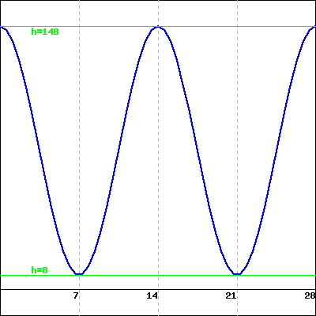
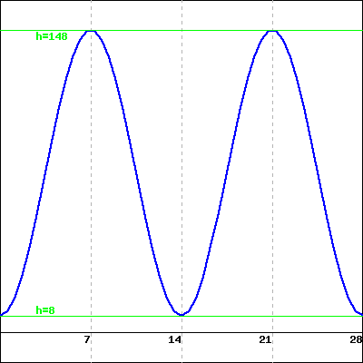
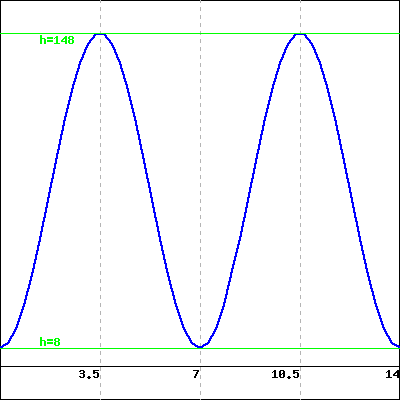
A
B
C
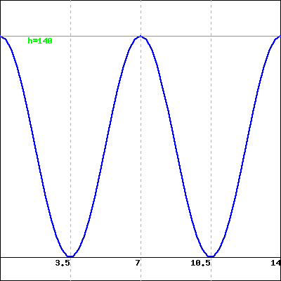
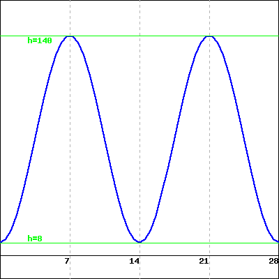
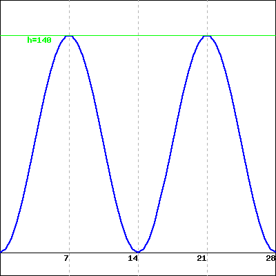
D
E
F
3.
A weight is suspended from the ceiling by a spring. Let \(d\) be the distance in centimeters from the ceiling to the weight. When the weight is motionless, \(d = 11 \, \mbox{cm}\text{.}\) If the weight is disturbed, it begins to bob up and down, or oscillate. Then \(d\) is a periodic function of \(t\text{,}\) the time in seconds, so \(d = f(t)\text{.}\) Consider the graph of \(d = f(t)\) below, which represents the distance of the weight from the ceiling at time \(t\text{.}\)
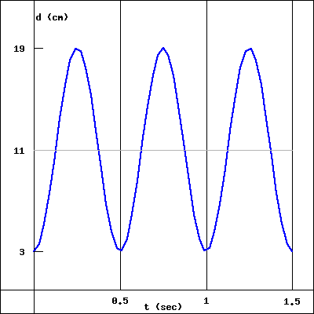
(a) Based on the graph of \(d =f(t)\) above, which of the statements below correctly describes the motion of the weight as it bobs up and down?
The weight starts closest to the floor and begins by bouncing up towards the ceiling.
The weight starts closest to the ceiling and begins by stretching the spring down towards the floor.
The spring starts at its average distance between the ceiling and floor and begins by stretching the spring down towards the floor.
None of the above
(b) How long does it take the weight to bounce completely up and down (or down and up) and return to its starting position?
The temperature of a chemical reaction oscillates between a low of \(10 \ {}^\circ C\) and a high of \(135 \ {}^\circ C\text{.}\) The temperature is at its lowest point at time \(t = 0\text{,}\) and reaches its maximum point over a two and a half hour period. It then takes the same amount of time to return back to its initial temperature. Let \(y = H(t)\) denote the temperature of the reaction \(t\) hours after the reaction begins.
(a) What is the period of the function \(y = H(t)\text{?}\) Include units 11
/webwork2_files/helpFiles/Units.html
in your answer.
(b) What is the midline of the function \(y = H(t)\text{?}\)\(y =\) Include units 12
/webwork2_files/helpFiles/Units.html
in your answer.
(c) What is the amplitude of the function \(y = H(t)\text{?}\) Include units 13
/webwork2_files/helpFiles/Units.html
in your answer.
(d) Based on your answers above, make a graph of the function \(y = H(t)\) on a piece of paper. Which of the graphs below best matches your graph?
Choose One
A
B
C
D
None of the above
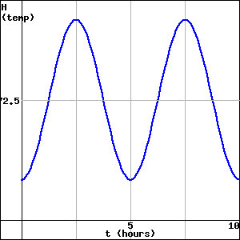
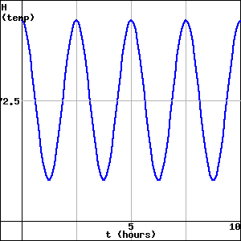
A
B
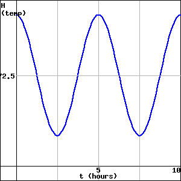
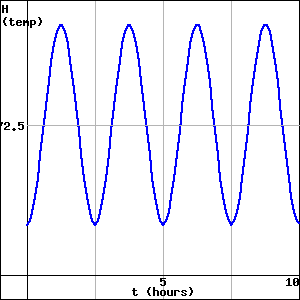
C
D
(Click on a graph to enlarge it.)
5.
Consider the circle pictured in Figure 2.1.14 that is centered at the point \((2,2)\) and that has circumference \(8\text{.}\) Suppose that we track the \(x\)-coordinate (that is, the horizontal location, which we will call \(k\)) of a point that is traversing the circle counterclockwise and that it starts at \(P_0\) as pictured.
Figure2.1.14.A point traversing the circle.
Figure2.1.15.Axes for plotting \(k\) as a function of \(d\text{.}\)
Recall that in Activity 2.1.2 we identified the exact and approximate vertical coordinates of all \(8\) noted points on the circle. In addition, recall that the radius of the circle is \(r = \frac{8}{2\pi} \approx 1.2732\text{.}\)
What is the exact horizontal coordinate of \(P_0\text{?}\) Why?
Complete the entries in Table 2.1.16 that track the horizontal location, \(k\text{,}\) of the point traversing the circle as a function of distance traveled, \(d\text{.}\)
Table2.1.16.Data for \(k\) as a function of \(d\text{.}\)
\(d\)
\(0\)
\(1\)
\(2\)
\(3\)
\(4\)
\(5\)
\(6\)
\(7\)
\(8\)
\(9\)
\(10\)
\(11\)
\(12\)
\(13\)
\(14\)
\(15\)
\(16\)
\(k\)
\(0.73\)
\(\)
\(\)
\(\)
\(\)
\(\)
\(\)
\(\)
\(\)
\(\)
\(\)
\(\)
\(\)
\(\)
\(\)
\(\)
\(\)
By plotting the points in Table 2.1.16 and connecting them in an intuitive way, sketch a graph of \(k\) as a function of \(d\) on the axes provided in Figure 2.1.15 over the interval \(0 \le d \le 16\text{.}\) Clearly label the scale of your axes and the coordinates of several important points on the curve.
What is similar about your graph in comparison to the one in Figure 2.1.7? What is different?
What will be the value of \(k\) when \(d = 51\text{?}\) How about when \(d = 102\text{?}\)
6.
Two circular functions, \(f\) and \(g\text{,}\) are generated by tracking the \(y\)-coordinate of a point traversing two different circles. The resulting graphs are shown in Figure 2.1.17 and Figure 2.1.18. Assuming the horizontal scale matches the vertical scale, answer the following questions for each of the functions \(f\) and \(g\text{.}\)
Figure2.1.17.A plot of the circular function \(f\text{.}\)
Figure2.1.18.A plot of the circular function \(g\text{.}\)
Assume that the circle used to generate the circular function is centered at the point \((0,m)\) and has radius \(r\text{.}\) What are the numerical values of \(m\) and \(r\text{?}\) Why?
What are the coordinates of the location on the circle at which the point begins its traverse? Said differently, what point on the circle corresponds to \(t = 0\) on the function’s graph?
What is the period of the function? How is this connected to the circle and to the scale on the horizontal axes on which the function is graphed?
How would the graph look if the circle’s radius was \(1\) unit larger? \(1\) unit smaller?
7.
A person goes for a ride on a ferris wheel. They enter one of the cars at the lowest possible point on the wheel from a platform \(7\) feet off the ground. When they are at the very top of the wheel, they are \(92\) feet off the ground. Let \(h\) represent the height of the car (in feet) and \(d\) (in feet) the distance the car has traveled along the wheel’s circumference from its starting location at the bottom of the wheel. We’ll use the notation \(h = f(d)\) for how height is a function of distance traveled.
How high above the ground is the center of the ferris wheel?
How far does the car travel in one complete trip around the wheel?
For the circular function \(h = f(d)\text{,}\) what is its amplitude? midline? period?
Sketch an accurate graph of \(h\) through at least two full periods. Clearly label the scale on the horizontal and vertical axes along with several important points.